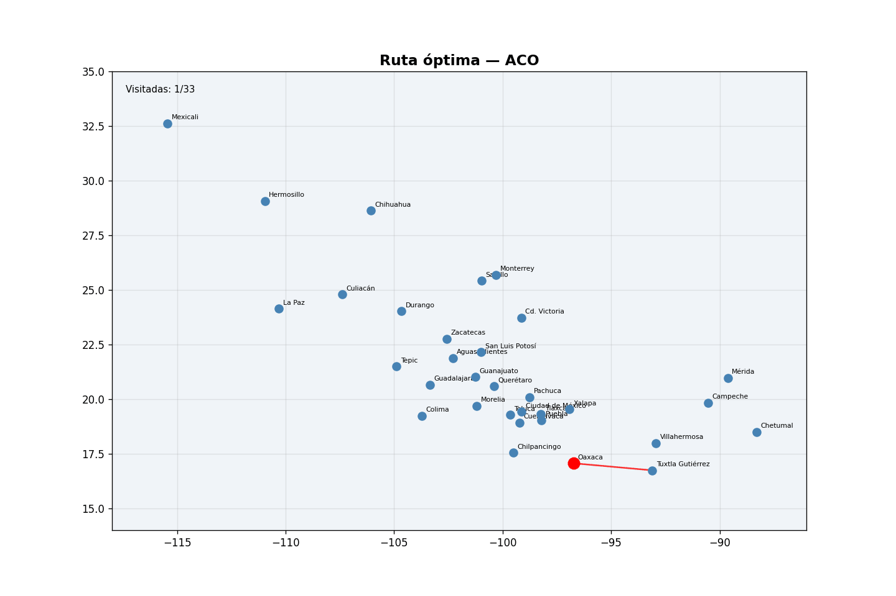
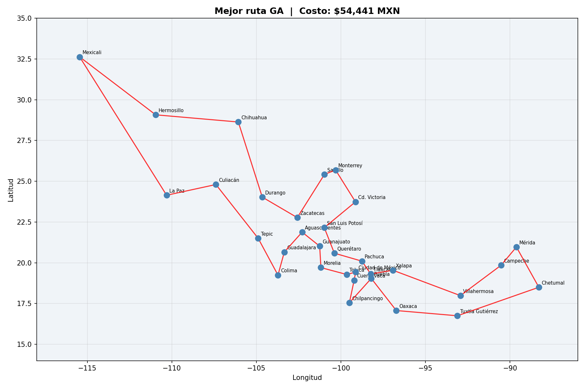
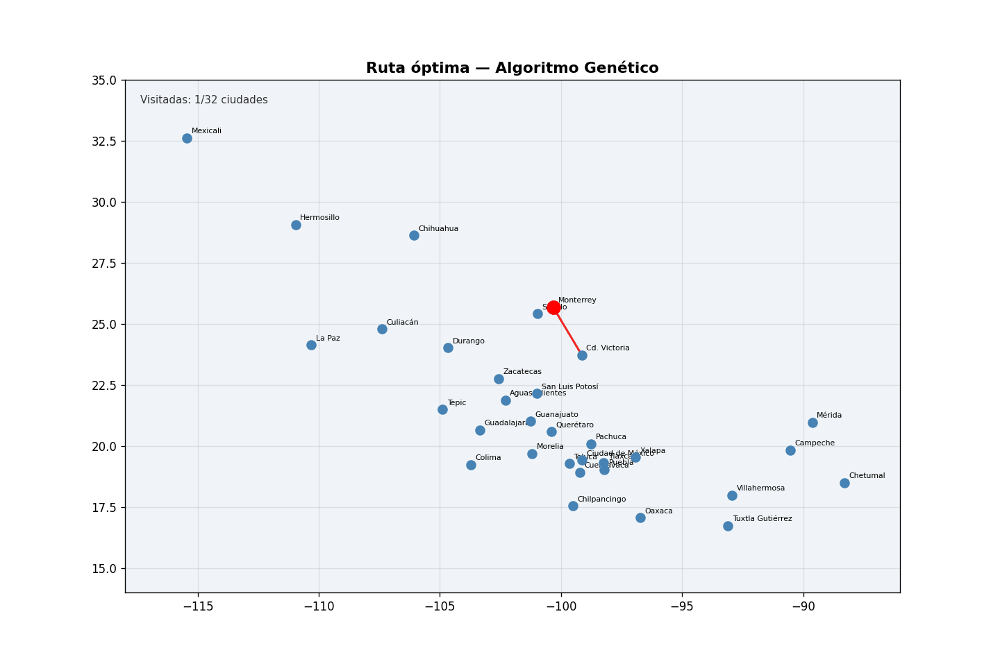

1. Selección de funciones de prueba
Para el presente trabajo se seleccionaron dos funciones de prueba ampliamente utilizadas en la literatura de optimización: la función de Rosenbrock y la función de Schwefel. Esta elección responde a que representan dos escenarios complementarios: una función unimodal con geometría compleja y una función altamente multimodal, lo que permite evaluar el comportamiento de distintos algoritmos ante retos de naturaleza diferente.
Función de Rosenbrock
La función de Rosenbrock es un problema clásico de optimización no convexa, unimodal, cuyo mínimo global se ubica en el interior de un valle angosto y curvado. Si bien localizar dicho valle no resulta difícil, la convergencia al mínimo es considerablemente más compleja. Su definición general es:
donde x = [x₁, …, xₙ]
El mínimo global se alcanza en x* = (1, 1, …, 1) con f(x*) = 0. Para N = 3, el punto óptimo es (1, 1, 1).
Función de Schwefel
La función de Schwefel es altamente multimodal y presenta numerosos mínimos locales distribuidos en el espacio de búsqueda, lo que la convierte en un problema particularmente exigente para cualquier algoritmo de optimización. Su formulación es:
El mínimo global se encuentra en x* = (420.9687, 420.9687, …) con f(x*) = 0. El dominio habitual de evaluación es xi ∈ [−500, 500].
2. Optimización mediante descenso por gradiente
Para la optimización basada en gradiente se utilizó el método BFGS (Broyden–Fletcher–Goldfarb–Shanno), un algoritmo cuasi-newtoniano implementado a través de la función scipy.optimize.minimize. Este método aproxima la inversa de la matriz hessiana sin calcularla explícitamente, lo que lo hace eficiente para problemas de dimensionalidad moderada.
Configuración experimental
Implementación
Se desarrollaron clases especializadas para cada función: Rosenbrock_sgd y Schwefel_sgd. Cada clase incluye la evaluación de la función objetivo, la optimización en 2D y 3D, el registro de la trayectoria mediante funciones callback, y la visualización del proceso de convergencia. Las animaciones generadas en formato GIF permiten observar cómo el algoritmo recorre el espacio de búsqueda.
La Figura 1 muestra la trayectoria del algoritmo BFGS sobre la función de Rosenbrock en sus versiones 2D y 3D. Se ilustra cómo el método recorre el espacio de búsqueda partiendo de un punto inicial aleatorio hasta alcanzar el mínimo global.


Se observa que el método BFGS navega eficientemente a lo largo del valle curvo y estrecho característico de Rosenbrock, convergiendo al mínimo global (1, 1) con tan solo 102 evaluaciones en 2D. La trayectoria revela la capacidad del gradiente para orientar la búsqueda de forma precisa en funciones suaves y unimodales.
La Figura 2 presenta el mismo experimento aplicado a la función de Schwefel, cuya alta multimodalidad representa un escenario completamente distinto para el método basado en gradiente.


3. Optimización mediante métodos heurísticos
Dadas las limitaciones del descenso por gradiente en funciones con múltiples mínimos locales, se implementaron tres enfoques heurísticos: Evolución Diferencial (DE), Optimización por Enjambre de Partículas (PSO) y Algoritmos Genéticos (GA). Estos métodos no requieren información sobre las derivadas de la función y son capaces de explorar el espacio de búsqueda de manera global.
Evolución Diferencial (DE)
Se utilizó la función scipy.optimize.differential_evolution. Este método poblacional genera nuevos candidatos combinando la diferencia entre individuos aleatorios de la población actual, sin requerir el cálculo del gradiente. Las clases implementadas fueron Rosenbrock_de y Schwefel_de, con límites de búsqueda definidos por el dominio de cada función.
La Figura 3 ilustra la dinámica de la Evolución Diferencial sobre la función de Rosenbrock. A diferencia del BFGS, la DE opera con una población de soluciones candidatas que evoluciona simultáneamente en el espacio de búsqueda.


El hallazgo principal es que la DE logra convergir al mínimo global (1, 1) con f(x*) ≈ 0, requiriendo 3 753 evaluaciones en 2D. Si bien esto es significativamente más costoso que el BFGS (102 evaluaciones), la DE ofrece mayor robustez al no depender de una trayectoria local única.
La Figura 4 muestra el comportamiento de la DE aplicada a la función de Schwefel, donde su capacidad de exploración global cobra especial relevancia frente a la alta densidad de mínimos locales.


A diferencia del BFGS, la DE logra identificar la región del mínimo global en x* ≈ (420.97, 420.97) con f(x*) ≈ 2.55 × 10⁻⁵. Este resultado confirma que la exploración poblacional es clave para escapar de los numerosos mínimos locales de Schwefel.
Optimización por Enjambre de Partículas (PSO)
Se empleó la librería pyswarms. En este enfoque, cada partícula ajusta su posición en función de su mejor experiencia individual y la mejor posición colectiva del enjambre. Los parámetros principales son:
Las clases implementadas fueron Rosenbrock_pso y Schwefel_pso.
Las Figuras 5 y 6 presentan la evolución del enjambre de partículas sobre Rosenbrock y Schwefel respectivamente. El comportamiento colectivo del enjambre permite observar cómo la información se propaga entre partículas a lo largo de las iteraciones.


El PSO alcanza el mínimo global de Rosenbrock con f(x*) ≈ 0 en 2D, aunque requiere 50 000 evaluaciones. En 3D la convergencia es menos precisa (f ≈ 4.90 × 10⁻⁵), lo que sugiere que el balance entre exploración y explotación se vuelve más crítico a medida que aumenta la dimensionalidad.


El PSO converge exitosamente al mínimo global de Schwefel en ambas dimensiones (f ≈ 2.55 × 10⁻⁵ en 2D), demostrando que la dinámica social del enjambre permite navegar entornos altamente multimodales con mayor efectividad que el gradiente puro.
Algoritmos Evolutivos (GA)
Se utilizó la librería pygad. Dado que pygad maximiza por defecto, la función de aptitud se definió como:
donde ε es una constante pequeña para evitar divisiones por cero. Las Figuras 7 y 8 muestran la evolución generacional del GA sobre ambas funciones de prueba, permitiendo observar cómo la población se concentra progresivamente en regiones de menor costo.


En 2D el GA obtiene f ≈ 6.30 × 10⁻⁴, una aproximación competitiva aunque ligeramente inferior a la DE y el PSO. En 3D el resultado se deteriora más notablemente (f ≈ 0.202), lo que evidencia que con los operadores estándar de pygad y sin ajuste fino de hiperparámetros, el GA presenta dificultades para explotar el valle estrecho de Rosenbrock en alta dimensión.


En la función de Schwefel el GA recupera su competitividad: alcanza f ≈ 2.55 × 10⁻⁵ en 2D y f ≈ 3.82 × 10⁻⁵ en 3D, igualando los resultados de la DE. Esto sugiere que la diversidad genética inherente al GA es un mecanismo efectivo para escapar de los mínimos locales de funciones multimodales.
La Figura 9 presenta una comparación lado a lado de las curvas de convergencia de los tres métodos heurísticos sobre la función de Rosenbrock, lo que permite contrastar visualmente su velocidad de mejora a lo largo de las iteraciones.

Descenso por gradiente

Enjambre de partículas

Algoritmo Genético
El hallazgo principal es la diferencia drástica en eficiencia: el BFGS converge en menos de 200 evaluaciones, mientras que PSO y GA requieren decenas de miles. Sin embargo, esta ventaja del BFGS solo es válida para Rosenbrock por su naturaleza unimodal; en funciones más complejas esta eficiencia desaparece.
La Figura 10 replica la comparación para la función de Schwefel, escenario donde los roles se invierten respecto a la Figura 9.

Descenso por gradiente

Enjambre Particulas

Algoritmo Genético
El contraste es contundente: mientras BFGS se estanca en un mínimo local con valor superior a 800, los métodos heurísticos convergen al mínimo global con valores en el orden de 10⁻⁵. Esto confirma que la exploración global es indispensable cuando la función objetivo presenta múltiples atractores locales.
4. Resultados de optimización numérica
Con el fin de consolidar los resultados obtenidos por los cuatro métodos evaluados, la Tabla 1 resume para cada combinación de función, dimensionalidad y algoritmo: la posición teórica del mínimo global, la posición efectivamente alcanzada, el valor de la función objetivo y el número total de evaluaciones requeridas.
| Función | Dim | Método | X Teórico | X Alcanzado | f(x) Teórico | f(x) Alcanzado | Evaluaciones |
|---|---|---|---|---|---|---|---|
| Rosenbrock | 2D | SGD (BFGS) | [1.00, 1.00] | [1.00, 1.00] | 0.0 | 2.55 × 10⁻¹¹ | 102 |
| Rosenbrock | 3D | SGD (BFGS) | [1.00, 1.00, 1.00] | [1.00, 1.00, 1.00] | 0.0 | 3.37 × 10⁻¹¹ | 288 |
| Rosenbrock | 2D | Evol. Dif. | [1.00, 1.00] | [1.00, 1.00] | 0.0 | 0.00 | 3 753 |
| Rosenbrock | 3D | Evol. Dif. | [1.00, 1.00, 1.00] | [1.00, 1.00, 1.00] | 0.0 | 0.00 | 10 894 |
| Rosenbrock | 2D | PSO | [1.00, 1.00] | [1.00, 1.00] | 0.0 | 0.00 | 50 000 |
| Rosenbrock | 3D | PSO | [1.00, 1.00, 1.00] | [1.00, 1.01, 1.01] | 0.0 | 4.90 × 10⁻⁵ | 75 000 |
| Rosenbrock | 2D | Alg. Gen. | [1.00, 1.00] | [1.01, 1.03] | 0.0 | 6.30 × 10⁻⁴ | 100 000 |
| Rosenbrock | 3D | Alg. Gen. | [1.00, 1.00, 1.00] | [0.78, 0.61, 0.37] | 0.0 | 2.02 × 10⁻¹ | 625 000 |
| Schwefel | 2D | SGD (BFGS) | [420.97, 420.97] | [−25.88, 5.24] | 0.0 | 8.10 × 10² | 30 |
| Schwefel | 3D | SGD (BFGS) | [420.97, …] | [5.24, −25.88, …] | 0.0 | 1.20 × 10³ | 60 |
| Schwefel | 2D | Evol. Dif. | [420.97, 420.97] | [420.97, 420.97] | 0.0 | 2.55 × 10⁻⁵ | 1 086 |
| Schwefel | 3D | Evol. Dif. | [420.97, …] | [420.97, 420.97, 420.97] | 0.0 | 3.82 × 10⁻⁵ | 2 585 |
| Schwefel | 2D | PSO | [420.97, 420.97] | [420.97, 420.97] | 0.0 | 2.55 × 10⁻⁵ | 50 000 |
| Schwefel | 3D | PSO | [420.97, …] | [420.97, 420.96, 420.97] | 0.0 | 4.35 × 10⁻⁵ | 75 000 |
| Schwefel | 2D | Alg. Gen. | [420.97, 420.97] | [420.97, 420.97] | 0.0 | 2.55 × 10⁻⁵ | 100 000 |
| Schwefel | 3D | Alg. Gen. | [420.97, …] | [420.97, 420.97, 420.97] | 0.0 | 3.82 × 10⁻⁵ | 625 000 |
Tabla 1. Resultados finales de optimización para las funciones Rosenbrock y Schwefel en 2D y 3D con cuatro métodos distintos. Se reportan la posición teórica del mínimo global, la posición alcanzada, el valor de la función objetivo y el número de evaluaciones.
El hallazgo más relevante de la tabla es la brecha entre BFGS y los métodos heurísticos según el tipo de función. En Rosenbrock, BFGS alcanza valores de f(x*) ≈ 10⁻¹¹ con menos de 300 evaluaciones, superando a cualquier heurístico. En Schwefel, en cambio, BFGS falla completamente (valores >800), mientras que DE, PSO y GA convergen al mínimo global con valores del orden de 10⁻⁵. La Evolución Diferencial destaca como el heurístico más eficiente en número de evaluaciones, completando la tarea con 1 086 y 2 585 llamadas en Schwefel 2D y 3D respectivamente.
5. Discusión comparativa
Métodos de descenso por gradiente
El método BFGS demostró ser altamente eficiente en problemas unimodales y suaves. Para la función de Rosenbrock, el valor alcanzado de la función objetivo es prácticamente idéntico al valor teórico (en el orden de 10⁻¹¹), con únicamente 102 evaluaciones en 2D y 288 en 3D. Esta eficiencia se explica por la capacidad del método de aprovechar la información del gradiente para dirigir la búsqueda de forma efectiva.
Sin embargo, ante la función de Schwefel —altamente multimodal—, el método falla de manera sistemática en alcanzar el mínimo global: converge a mínimos locales con valores de 809.94 (2D) y 1204.8 (3D), utilizando apenas 30 y 60 evaluaciones respectivamente. Esta convergencia prematura ilustra la principal limitación de los métodos basados en gradiente cuando el paisaje de la función presenta múltiples atractores.
Métodos heurísticos
Los tres métodos heurísticos evaluados —DE, PSO y GA— comparten la capacidad de exploración global del espacio de búsqueda, lo cual los hace robustos frente a funciones multimodales. En la función de Schwefel, los tres logran aproximarse al mínimo global en 2D y 3D, con valores de función objetivo en el rango de 10⁻⁵, un resultado inaccesible para el BFGS.
Para la función de Rosenbrock, también alcanzan el mínimo global, aunque con un costo computacional considerablemente mayor: desde 3 753 evaluaciones para la Evolución Diferencial hasta más de 600 000 para el Algoritmo Genético en 3D. La DE resultó ser el método heurístico más eficiente en términos de número de evaluaciones, mientras que el GA, aunque el más costoso, mantiene una mayor diversidad en la exploración.
Síntesis comparativa
- BFGS (gradiente): alta eficiencia y precisión en funciones suaves y unimodales; falla en presencia de múltiples mínimos locales.
- Evolución Diferencial: mejor balance entre eficiencia y robustez global entre los métodos heurísticos evaluados.
- PSO: convergencia estable y competitiva, con mayor número de evaluaciones pero resultados consistentes.
- Algoritmos Genéticos: mayor costo computacional; adecuado cuando la diversidad de exploración es prioritaria frente a la eficiencia.
- La elección del método debe considerar la naturaleza de la función objetivo (unimodal vs. multimodal) y el balance entre rapidez y capacidad de exploración global.
6. Costo del vendedor y vehículo
Perfil del vendedor y costo por hora
El vendedor modelado es un ejecutivo de ventas bancarias especializado en la promoción de tarjetas de crédito. Este perfil percibe normalmente entre 25 000 y 50 000 MXN al mes, considerando sueldo base y comisiones variables. Para el modelo se adoptó un salario de 30 000 MXN/mes, valor que supera el salario promedio de un trabajador formal en México (entre 15 000 y 20 000 MXN, según datos del IMSS de 2025) y refleja la experiencia requerida por el puesto.
Tomando una jornada de 8 horas diarias y 20 días laborables al mes, el vendedor acumula 160 horas mensuales de trabajo. El costo por hora resulta:
Cada hora invertida en desplazamiento representa tiempo no dedicado a ventas, por lo que se incorpora como costo económico real dentro de la función objetivo del TSP. Este parámetro también permite analizar la sensibilidad de la ruta óptima ante variaciones en el valor del tiempo del vendedor.
Vehículo seleccionado
Se eligió el Nissan Versa 2026 versión Sense MT como vehículo de trabajo, por ser el modelo más vendido en México y contar con características de accesibilidad y economía adecuadas al perfil del vendedor. Su consumo promedio de combustible es de 18.8 km/l (Nissan México, 2026).
Función de costo entre ciudades
La matriz de costos de desplazamiento se construyó mediante web scraping automatizado del sistema Traza tu Ruta de CAPUFE. Para cada par de ciudades (192 pares posibles entre las 32 capitales) se obtuvo:
donde tij es el tiempo de viaje en horas, ch = 187.5 MXN/h es el costo por hora del vendedor, y los costos de combustible y casetas se extrajeron directamente de la calculadora de rutas.
7. Colonias de hormigas (ACO)
Para la resolución del Problema del Viajero (TSP) con las 32 capitales de México se implementó el algoritmo de Optimización por Colonias de Hormigas (Ant Colony Optimization, ACO), una metaheurística bioinspirada en el comportamiento colectivo de las hormigas al explorar caminos entre su colonia y fuentes de alimento.
Construcción de soluciones
En cada iteración, un conjunto de hormigas construye rutas completas partiendo de una ciudad inicial aleatoria. La probabilidad de elegir la siguiente ciudad está determinada por:
donde τij es la cantidad de feromona en la arista (i, j), ηij = 1/Cij es la información heurística, y los parámetros α y β controlan la influencia relativa de cada componente. El parámetro choose_best introduce una probabilidad de selección directa de la mejor opción disponible, equilibrando exploración y explotación.
Actualización de feromonas
Al finalizar cada iteración, las feromonas se actualizan mediante dos mecanismos: evaporación (reducción global para evitar convergencia prematura) e intensificación (incremento sobre las aristas de la mejor ruta encontrada en esa iteración). Este ciclo refuerza progresivamente las rutas de menor costo.
Parámetros utilizados
Resultado obtenido
Costo total: $55,872.54 MXN
Costo inicial: $62,748.22 MXN · Mejora: −$6,875.68 (−11.0 %)
Mejor solución en iteración 16 · Parada anticipada en iteración 19 · Runtime: < 1 min
Mejor ruta encontrada — ACO (inicio: Oaxaca)
La Figura 11 muestra la animación del recorrido construido por el ACO sobre el mapa de México, permitiendo visualizar la secuencia geográfica de las 32 capitales visitadas y la coherencia espacial de la ruta encontrada.

El hallazgo principal es la coherencia geográfica de la solución: el ACO construye un recorrido que agrupa las ciudades por regiones (sureste → golfo → centro → norte → noroeste → occidente → centro), evitando cruces innecesarios. Esta estructura emergió sin ninguna guía geográfica explícita, únicamente a partir del mecanismo de feromonas y la información heurística de costo entre ciudades. Cabe destacar que la mejor solución se encontró en la iteración 16 de 19 ejecutadas, lo que evidencia una convergencia excepcionalmente rápida.
8. Algoritmo Genético para el TSP
Además del ACO, se implementó un Algoritmo Genético (GA) para resolver el mismo problema de ruteo. El GA representa las soluciones como permutaciones de los índices de las 32 capitales y evoluciona la población mediante selección, cruce y mutación.
Estructura del algoritmo
El flujo general del GA comprende los siguientes pasos: (1) inicialización de una población de rutas aleatorias; (2) evaluación del costo total de cada ruta; (3) selección mediante torneo; (4) cruce con los métodos Order Crossover (OX) y Partially Mapped Crossover (PMX); (5) mutación por inversión, intercambio o mezcla aleatoria de un segmento; y (6) creación de la siguiente generación con elitismo.
Parámetros utilizados
Resultado obtenido
Costo total: $55,097.76 MXN
Costo inicial: $145,845.80 MXN · Mejora: −$90,748.04 (−62.2 %)
Mejor solución en generación 84 · Parada anticipada en generación 134 · Runtime: ~2 s
Mejor ruta encontrada — GA (inicio: Puebla)
La Figura 12 muestra el mapa estático de la mejor ruta encontrada por el GA, permitiendo evaluar visualmente la coherencia geográfica del recorrido optimizado sobre el territorio mexicano.

Al igual que el ACO, el GA converge a una ruta geográficamente coherente que recorre el país en sentido sur-centro-norte-noroeste-occidente-sureste, sin cruces visibles entre segmentos. La diferencia clave respecto al ACO es la secuencia en el centro del país (Puebla → sur de México → centro → occidente), que el GA resuelve de forma ligeramente más eficiente en términos de costo total.
La Figura 13 ilustra la evolución generacional del GA a lo largo de las 134 generaciones ejecutadas, mostrando cómo la calidad de la mejor solución mejora progresivamente antes de estabilizarse.

Se observa que la mayor parte de la mejora ocurre entre las generaciones 0 y 42, donde el costo cae de $145,845 a $56,586 MXN (reducción del 61.2 %). A partir de la generación 62 los avances son marginales, y la solución final de $55,097.76 MXN se estabiliza en la generación 84. Esto sugiere que el operador OX y la mutación por inversión son muy efectivos en las etapas tempranas de exploración, pero la explotación fina de la solución requiere muchas más generaciones.
Conclusiones del TSP
Ambos métodos —ACO y GA— obtuvieron soluciones de calidad muy similar, con una diferencia de apenas el 1.4 % entre sí. En esta ejecución el GA logró superar al ACO en costo final, lo que evidencia que con los operadores de cruce y mutación correctamente configurados, el algoritmo genético puede rivalizar e incluso superar a la colonia de hormigas en problemas de ruteo georreferenciado. El ACO, por su parte, destacó por su extrema velocidad de convergencia, alcanzando una solución competitiva en apenas 19 iteraciones.
9. Comparación de resultados: ACO vs Algoritmo Genético
| Parámetro | ACO | Algoritmo Genético |
|---|---|---|
| Costo total óptimo | $55,872.54 MXN | $55,097.76 MXN ✓ |
| Costo inicial (iter./gen. 0) | $62,748.22 MXN | $145,845.80 MXN |
| Mejora total obtenida | −$6,875.68 (−11.0 %) | −$90,748.04 (−62.2 %) |
| Iteraciones / Generaciones ejecutadas | 19 iteraciones | 134 generaciones |
| Iteraciones configuradas | 500 iteraciones | 500 generaciones |
| Criterio de parada anticipada | 20 iteraciones sin mejora | 50 generaciones sin mejora |
| Iteración / Generación de mejor solución | Iter. 16 ($55,872.54) | Gen. 84 ($55,097.76) |
| Tamaño de población / colonia | 200 hormigas | 200 individuos |
| Tiempo de ejecución | < 1 minuto | ~2 segundos |
| Ciudad de inicio de ruta | Oaxaca | Puebla |
| Método ganador | ✓ GA — menor costo absoluto ($55,097.76 MXN, −1.4 % vs ACO) | |
Tabla 2. Comparación de resultados entre ACO y Algoritmo Genético para el TSP con 32 capitales de México.
Conclusiones comparativas: ACO vs GA
- Calidad de solución: en esta ejecución el GA obtuvo la ruta de menor costo ($55,097.76 vs $55,872.54 MXN), superando al ACO por un margen estrecho del 1.4 %. Esto demuestra que ambos algoritmos son competitivos y que pequeñas variaciones estocásticas pueden inclinar la balanza en uno u otro sentido.
- Velocidad de convergencia: el ACO convergió en apenas 19 iteraciones, frente a las 134 generaciones del GA. El mecanismo de feromonas orientó la búsqueda hacia soluciones competitivas de forma considerablemente más rápida, aunque sin alcanzar la calidad final del GA.
- Exploración inicial: el GA partió de soluciones muy alejadas del óptimo (costo inicial ~$146 K MXN) y realizó una mejora porcentual mucho mayor (62.2 %), evidenciando su mayor capacidad de exploración amplia del espacio de búsqueda desde permutaciones iniciales aleatorias.
- Sensibilidad al punto de inicio: el ACO depende menos del nodo de partida gracias al mecanismo de feromonas globales; el GA, en cambio, evolucionó de forma consistente independientemente del orden inicial, consolidando rutas geográficamente coherentes a través de sus operadores genéticos.
- Recomendación práctica: para este TSP georreferenciado con matriz de costos reales, ambos métodos son viables y producen resultados muy similares. El ACO es preferible cuando se requiere una solución rápida con pocas iteraciones; el GA es recomendable cuando se dispone de más tiempo de cómputo y se busca exprimir la calidad de la solución final.
Orden de visitas optimizado minimizando costo total (tiempo del vendedor + combustible + casetas de peaje).
$55,097.76 MXN
10. Prompts principales utilizados
A continuación se transcriben los prompts más relevantes utilizados durante el desarrollo del trabajo. Su uso fue determinante para agilizar tanto la implementación técnica como la generación de visualizaciones.
Discusión sobre Inteligencia Artificial y el uso de prompts
Durante el desarrollo del trabajo, la Inteligencia Artificial (IA) y el uso estratégico de prompts jugaron un papel central. Los prompts no solo guiaron la generación de soluciones técnicas, sino que también facilitaron la comprensión y optimización de procesos complejos.
En el caso del Prompt 1, enfocado en el web scraping de la calculadora de rutas de CAPUFE, la IA permitió diseñar un script robusto capaz de manejar formularios dinámicos, gestionar errores de conexión y mantener el progreso de la extracción de datos. Sin asistencia de IA, esta tarea habría requerido una programación manual extensiva, incrementando el riesgo de errores y el tiempo de desarrollo.
Por su parte, el Prompt 2 demostró cómo la IA puede aportar conocimiento experto en optimización de hiperparámetros. Al analizar un problema de convergencia del algoritmo PSO sobre la función Schwefel, los ajustes sugeridos por la IA se basaron en literatura especializada, acelerando la experimentación y permitiendo generar visualizaciones animadas de resultados de manera más eficiente.
Estos ejemplos evidencian que la IA, utilizada como asistente de programación y análisis, no reemplaza el juicio humano, pero sí potencia significativamente la eficiencia y la precisión en tareas complejas. Además, permite integrar recomendaciones basadas en buenas prácticas y literatura científica, favoreciendo soluciones más robustas y fundamentadas.
En conclusión, la interacción con la IA mediante prompts bien diseñados se consolidó como una herramienta de apoyo clave en este proyecto, optimizando tanto la recolección de datos como la exploración de algoritmos de optimización.
10. Contribuciones individuales y bibliografía
Contribuciones individuales
A continuación se describen los aportes específicos de cada integrante del equipo:
- implementación del componente ACO y Entrenamiento
- web scraping CAPUFE y construcción de matrices de costo
- Implementación del GA para el TSP y entrenamiento
- Elaboración del reporte
- Generación de animaciones y visualizaciones en la parte 1
- Elaboración de clases segun las funciones escogidas
Cada integrante del equipo grabó un video corto describiendo en primera persona sus aportes específicos al trabajo
Ver videoRepositorio de código
El código fuente completo del proyecto —incluyendo la implementación de todos los algoritmos, el script de web scraping y la generación de visualizaciones— se encuentra disponible en el siguiente repositorio Git:
Bibliografía
- 1. Nissan México. (2026). Nissan Versa 2026 – Kit de prensa. Nissan News. https://mexico.nissannews.com/es-MX/releases/nissan-versa-2026-kit-de-prensa
- 2. Caminos y Puentes Federales. (s.f.). Traza tu ruta. CAPUFE. https://tarifascapufe.com.mx/traza-tu-ruta/
- 3. Google Maps. (2026). Coordenadas de ciudades mexicanas. https://www.google.com/maps
- 4. Instituto Mexicano del Seguro Social. (2025, abril). Informe mensual del empleo formal. Marzo 2025. https://www.imss.gob.mx/prensa/archivo/202505/220
- 5. OCC Mundial. (2025). Ejecutivo de Cuentas TDC – Vacantes activas en México. https://www.occ.com.mx/empleos/de-tarjetas-de-credito/
- 6. Hunter, J. D. (2007). Matplotlib: A 2D graphics environment. Computing in Science & Engineering, 9(3), 90–95. https://doi.org/10.1109/MCSE.2007.55
- 7. Harris, C. R., et al. (2020). Array programming with NumPy. Nature, 585(7825), 357–362. https://doi.org/10.1038/s41586-020-2649-2
- 8. Gad, A. F. (2021). PyGAD: An intuitive genetic algorithm Python library (Versión 2.16.3) [Software]. GitHub. https://github.com/ahmedfgad/GeneticAlgorithmPython
- 9. Miranda, L. J. V. (2018). PySwarms: a Python package for particle swarm optimization. Journal of Open Source Software, 3(21), 433. https://doi.org/10.21105/joss.00433
- 10. Virtanen, P., et al. (2020). SciPy 1.0: Fundamental algorithms for scientific computing in Python. Nature Methods, 17(3), 261–272. https://doi.org/10.1038/s41592-019-0686-2
- 11. Wikipedia. (2024, 13 de marzo). Rosenbrock function. https://en.wikipedia.org/wiki/Rosenbrock_function
- 12. Surjanovic, S., & Bingham, D. (s.f.). Schwefel function. Virtual Library of Simulation Experiments: Test Functions and Datasets. Simon Fraser University. https://www.sfu.ca/~ssurjano/schwef.html